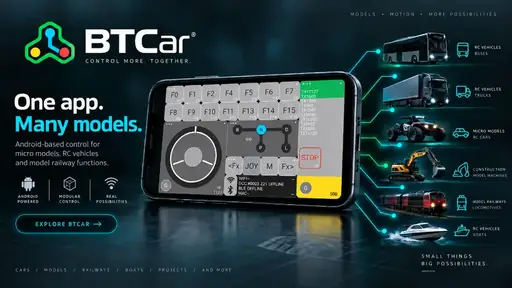

Mi a BTCar?
A BTCar egy független fejlesztésű Android-alapú univerzális modellvezérlő. Célja, hogy egyetlen, testreszabható felületen lehessen mikromodelleket, RC járműveket és modellvasúti funkciókat vezérelni.
Nem minden hagyományos RC távirányító helyettesítésére készül. Más megközelítést kínál: vezetés, világítás, hang, funkciók, telemetria és profilok egyetlen alkalmazásban, több kommunikációs móddal.
Egy app, sok modell
Ugyanaz a telefon különböző modellekhez, modellenként menthető beállításokkal.
Több kommunikáció
BLE, Bluetooth Classic, WiFi/ESP32, valamint fejlesztés alatt álló modellvasúti kapcsolatok.
Sok logikai funkció
Kormány és gáz mellett F-funkciók, váltó, fények, hangok, telemetria és további modellezői funkciók.
Fő funkciók
BLE / BT Classic
Közvetlen vezeték nélküli kapcsolat kompatibilis modellvezérlő elektronikákkal.
WiFi / ESP32
DataStream alapú WiFi vezérlés szerkeszthető hálózati beállításokkal.
F0–F31
Világítás, hang, kürt, sziréna és egyedi modellfunkciók kezelése.
Kormány, gáz, váltó
Érintőképernyős, modellhez igazítható vezérlés és biztonsági STOP funkció.
Telemetria
Kapcsolati és modelladatok megjelenítése közvetlenül a kezelőfelületen.
Profilok
Különböző modellek beállításainak mentése, megnyitása és kezelése.
Public Beta
A BTCar jelenleg aktív fejlesztés és tesztelés alatt áll. A nyilvános béta verzió ingyenesen használható. A cél most a valós modelleken, különböző Android készülékeken és kommunikációs módokkal szerzett tapasztalatok összegyűjtése.
PUBLIC BETA · FEJLESZTÉS ALATTSegítsd a fejlesztést visszajelzéssel
Ha kipróbálod a BTCar-t, örömmel fogadok 1–2 képet az általad vezérelt modellről, és ha van rá lehetőséged, egy rövid videót is. Különösen fontos minden hibás, bizonytalan vagy nem a várt módon működő részlet jelzése.
- telefon típusa
- Android-verzió
- használt kommunikációs mód
- a hiba rövid leírása és reprodukálásának lépései
- ha lehetséges: kép vagy rövid videó / videólink
A BTCar fejlesztésének támogatása
ajánlott, önkéntes fejlesztési támogatás
A Public Beta ingyenes
A támogatás teljesen önkéntes, nem old fel funkciókat, és nem befolyásolja a béta verzió használatát.
Mire fordítódik?
Fejlesztésre, tesztelésre, dokumentációra és a projekt további fenntartására.
A közvetlen támogatási link / QR-kód a végleges beállítás után kerül ide.
Inspirációk és köszönet
A BTCar független fejlesztés. Az alábbi alkotók és YouTube-csatornák munkái sok ötletet, szakmai ismeretet és inspirációt adtak. A felsorolás köszönetnyilvánítás; nem jelent hivatalos együttműködést vagy támogatást a BTCar projekt irányába.
Kiemelkedő oktatóvideók, kreatív ötletek és sok inspiráció a mikromodellezéshez.
Rendkívüli precizitás és nagyszerű mechanikai megoldások.
Precíz kézimunka, kiváló elektronikai ötletek és parányi modellmegoldások.
Az alkalmazásos modellvezérlés egyik fontos kezdeti inspirációja; innen indult az „egy app, sok funkció” továbbgondolása.
Remek hobbi megoldások és nagyon igényes kivitelezés.
Alaptechnikák, kézi munka és hasznos oktatás, különösen kezdők számára.
Funkcionális 3D nyomtatott modellek, precíz mozgások és élethű kivitelezés.
Különösen érdekes tartalom az Ikarus buszok és buszmodellezés szerelmeseinek.
Nagyon ajánlott oktatóvideók mikromodellezőknek.
Rendkívül precíz, átgondolt és igényesen megvalósított modellezési megoldások.
Szép, részletgazdag és élethű modellek.
Érdekes eltérő megközelítések és sok jó mechanikai ötlet.
Páratlanul szép és élethű buszmodellek, látványos videókkal.